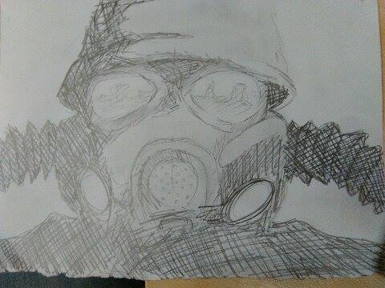

Games developed
The company's first game was Metro 2033, an adaptation of the novel of the same name by Russian author Dmitry Glukhovsky. Work on the project began in 2006, which was first unveiled to the public during the 2009 Games Convention in Leipzig, Germany. The game was announced to the press via publisher THQ and Nvidia, who worked with the developers to integrate PhysX functionality. The game was released in March 2010 on the Xbox 360 and Microsoft Windows to generally favorable reviews.

Following their initial success, 4A Games began work on the sequel, Metro: Last Light, which was announced during the 2011 E3 convention. The game faced several issues during its production, whose release date was delayed from 2012 to 2013. The most significant setback for the company occurred in January 2013, when the game's publisher, THQ, closed down after declaring bankruptcy and auctioning off its intellectual properties. The publishing rights to the Metro 2033 franchise, including the sequel, were sold to Koch Media for $5.8 million on 22 January, allowing the company to finish making the game. Metro: Last Light was finally released on 14 May 2013, and was published by Koch Media's video game label, Deep Silver.

On 30 March 2014, a remastered re-release of both Metro titles, under the name Metro Redux, was leaked, and confirmed the day after. The compilation was released in August 2014 for eighth-generation platforms.

During the 2017 E3 convention, at the Microsoft press conference on 11 Jun 2017, a new game, Metro Exodus, was announced for a 2018 release. Gameplay was shown to both announce the game and act as a graphical showcase for Microsoft's native 4K-focused update to the Xbox One hardware, Xbox One X.

On 12 May 2014, amidst the Ukrainian crisis and following the annexation of Crimea by the Russian Federation, 4A Games announced that they were to expand by opening a new studio in and moving their headquarters to Sliema, Malta to allow for easier operations inside the European Union, with the Kiev studio continuing to operate for Eastern European operations.
4A Games Limited is a Ukrainian video game developer based in Sliema, Malta. The company was founded in Kiev, Ukraine in 2005, and moved its headquarters to Malta in 2014, with the Kiev office resuming work as sub-studio, but retaining the majority of the staff. 4A Games is best known for developing the Metro video game franchise. The company's first game was Metro 2033, an adaptation of the novel of the same name by Russian author Dmitry Glukhovsky.
